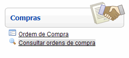
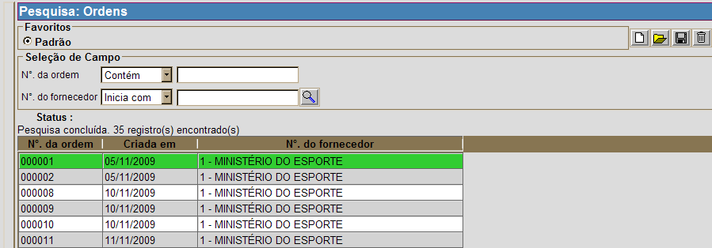

Consultar Ordens de Compra [ Voltar ]Esta tela pode ser utilizada para pesquisar as ordens de compra existentes no sistema. O formulário "Consultar ordens de compra" se encontra dentro do menu "Compras". 
Ao clicar no menu "Consultar
ordens de compra", a seguinte tela será exibida pelo
sistema: 
Selecione com um clique a ordem desejada. Ao clicar na ordem de compra, o usuário será direcionado à tela "Ordem de Compra", onde serão exibidas todas as informações da ordem. Observação: para informações sobre como selecionar os filtros da pesquisa, editar favoritos, organizar a tabela de resultado e outras funcionalidades da tela de pesquisa, favor ver a seção Ferramenta de busca, do manual Introdução ao Sistema. |